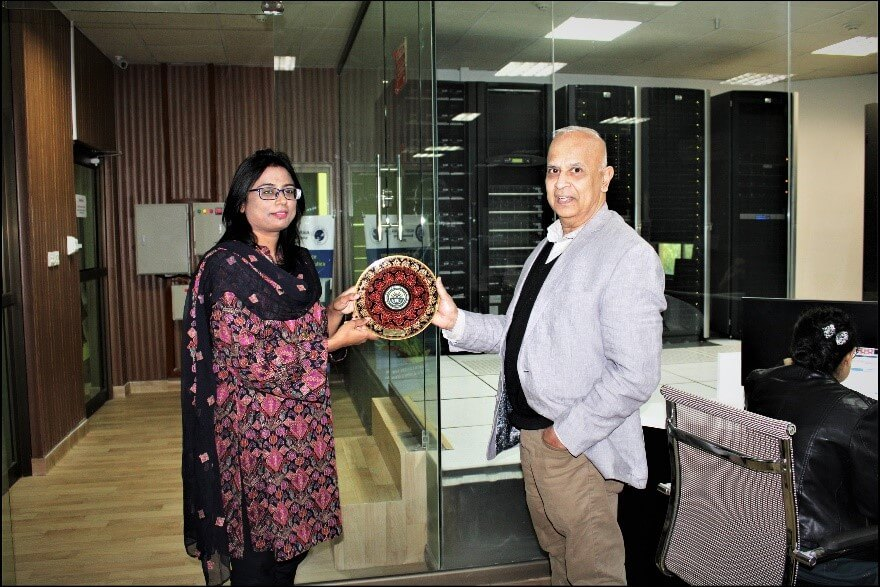

Research Collaborations
1. COMSATS & CRICK INSTITUTE
(UK). 2018
Project: Charles Wallace Visiting Fellowship
Investigators: Drs. Asma Amjad (COMSATS)
Justin Molloy (Crick)
Funding Agency: British Council

Image courtesy of Dr Asma Amjad
2. NUST & MBC@LBNL (USA). 2020
Project: Supercomputer Assisted pharmaco-informatics protocol for rational re purposing of therapeutics
for COVID-19
Investigators: Drs. Ishrat Jabeen (NUST), Shahid Khan (MBC@LBNL)
Funding Agency: Pakistan HEC, PSF (Pending)

Drs. Ishrat Jabeen (L) and Shahid Khan (R)